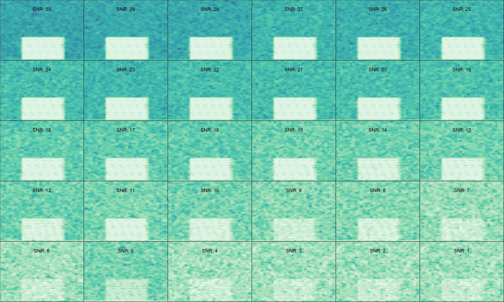
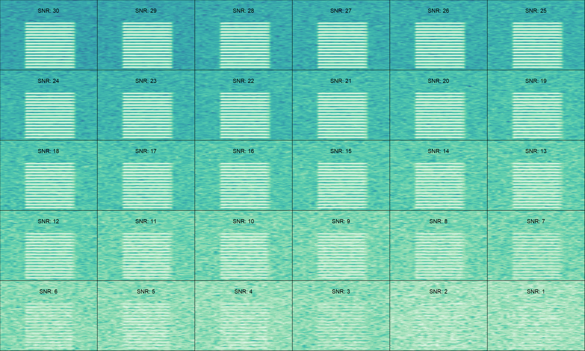
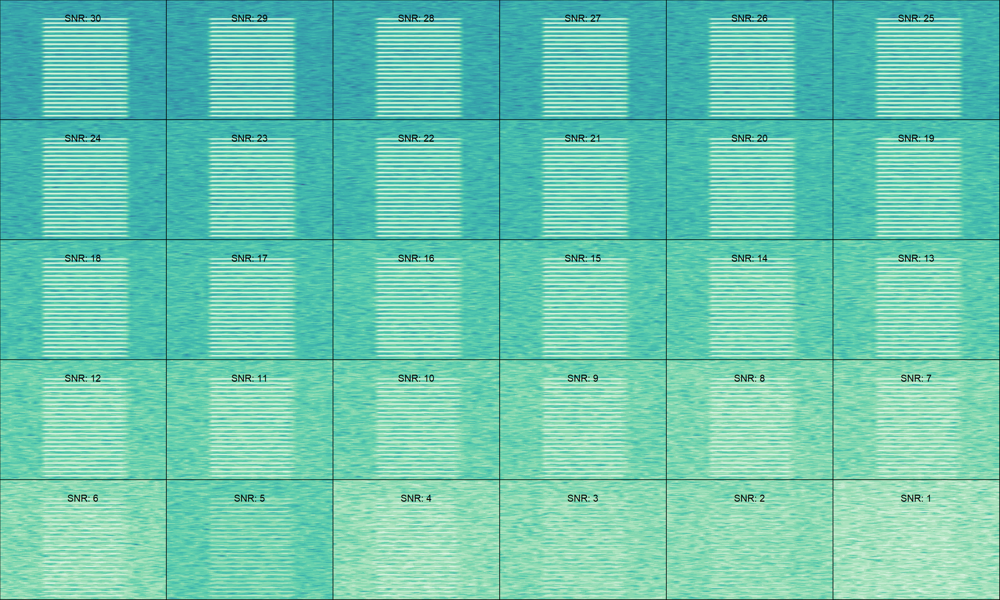
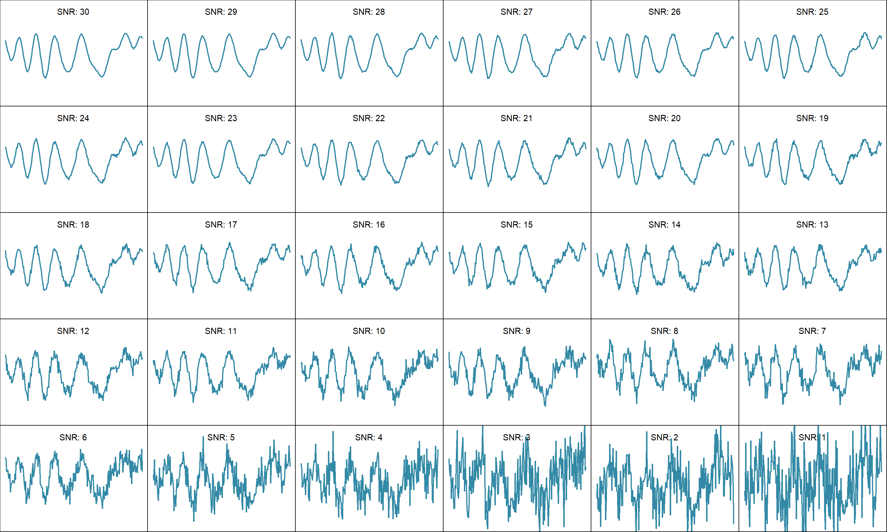
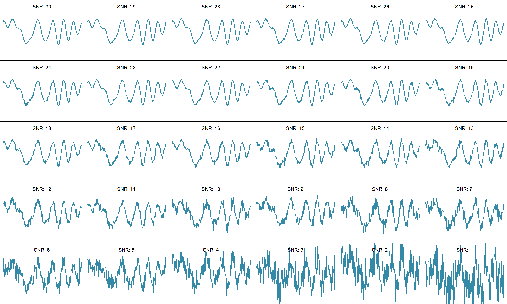
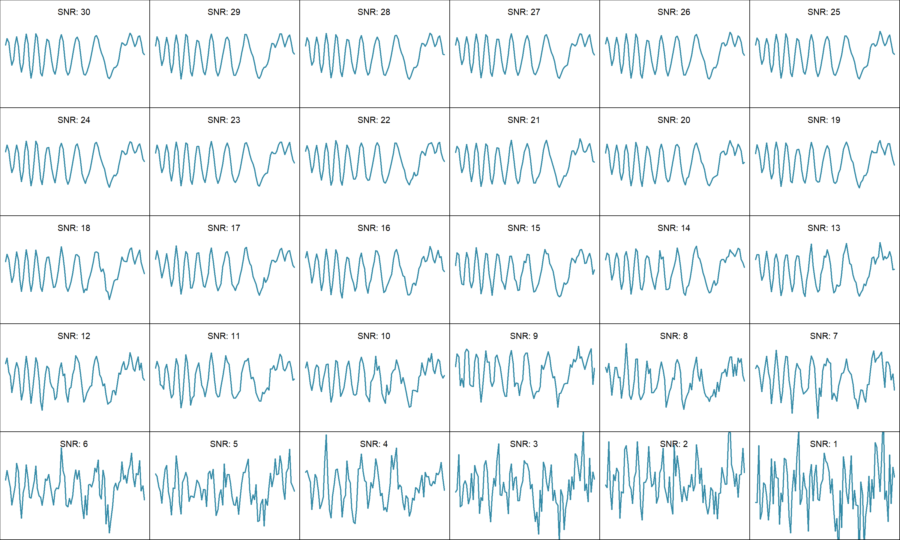
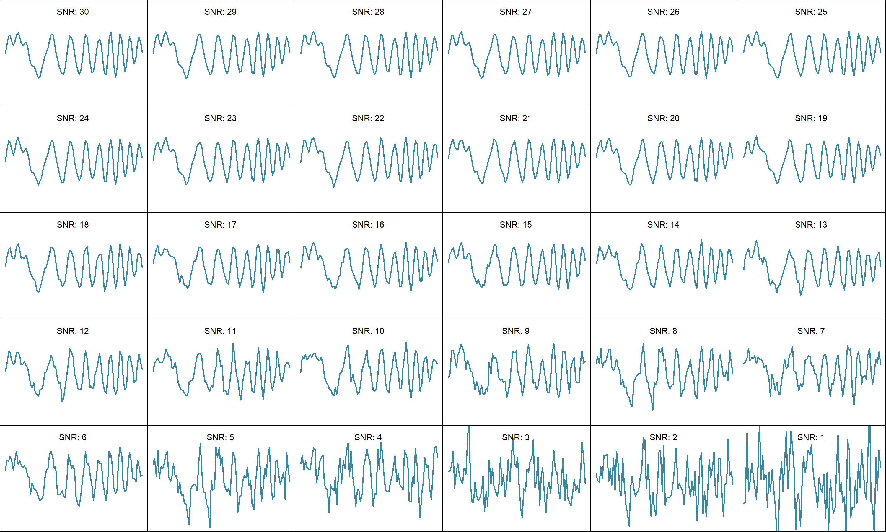
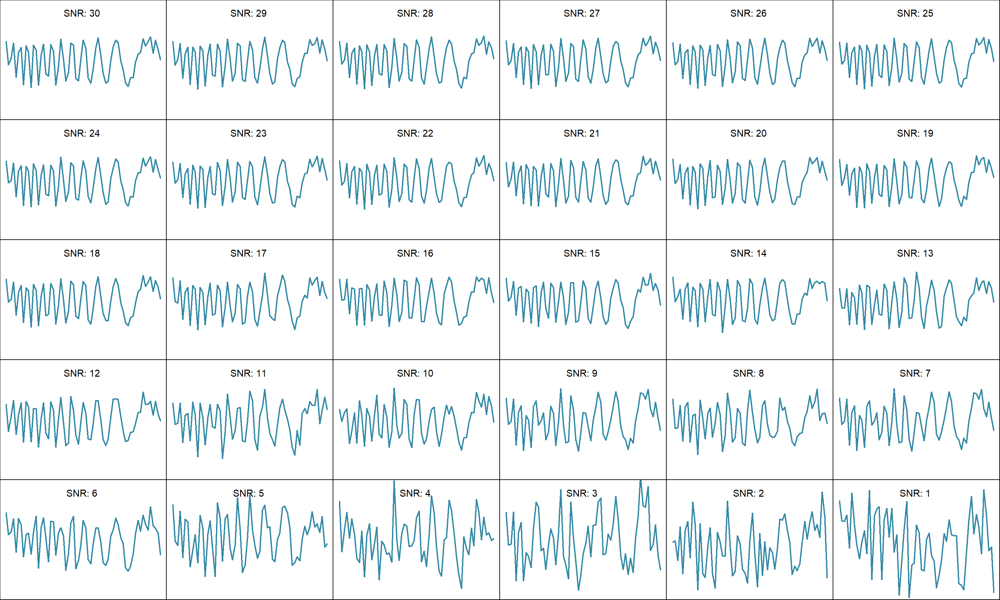
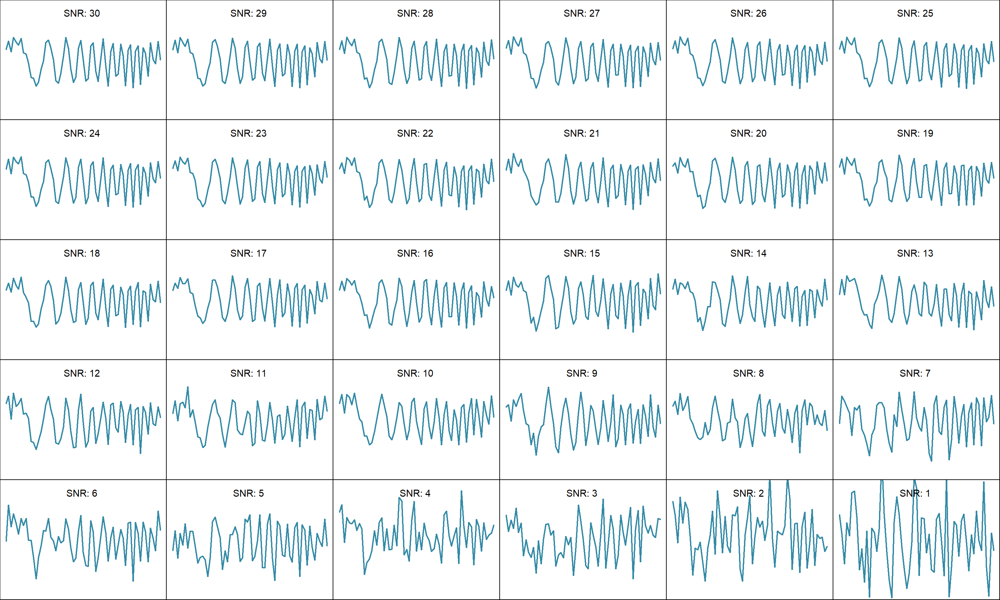
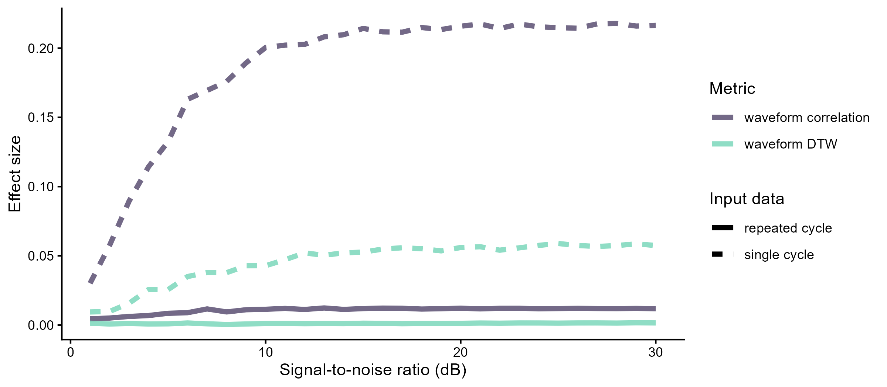

Effect of background noise on schroeder structure detection
Fine scale acoustic perception in zebra finches
Source code and data found at https://github.com/maRce10/acoustic-fine-features-zebra-finch
1 Purpose
- Evaluate the effect of degradation on the detection of acoustic fine structural variation in Schroeders
2 Data analysis workflow
flowchart LR A[Raw Schroeder\nrecordings] --> B(Aritfically\nDecrease SNR) B --> C(measure\nSchroeder\nsimilarity) C --> D(Matrix\nregression\nmodels) style A fill:#44015466 style B fill:#3E4A894D style C fill:#6DCD594D style D fill:#FDE7254D
3 Degradation as a function of signal-to-noise ratio
- Adding synthetic noise to the master sound file annotations to decrease the signal-to-noise
- Evaluate at which signal-to-noise ratio Schroeder sign can still be distinguished
3.1 On 200ms schroeders
3.1.1 Add synthetic noise
3.1.1.1 Repeated Schroeders
Code
master_annotations <- imp_raven(path = "./data/processed", files = "200ms_schroeders.txt",
warbler.format = TRUE, all.data = TRUE)
master_annotations$sound.id <- paste0("f0:", master_annotations$f0,
"_comp:", master_annotations$label)
master_annotations$sound.id[1] <- "start_marker"
master_annotations$sound.id[nrow(master_annotations)] <- "end_marker"
est_master <- selection_table(master_annotations[grep("marker", master_annotations$sound.id,
invert = TRUE), ], extended = TRUE, mar = 0.1, path = "./data/processed")
# est_schr <-
# readRDS('./data/processed/extended_selection_table_schroeders.RDS')
# est_schr <- readRDS(file.path(path,
# 'extended_sel_table_degradation_exp.RDS')) est_schr$treatment
# <- ifelse(grepl('inside', est_schr$sound.files), 'inside',
# 'outside') est_schr$sound.id <- 1:nrow(est_schr) est_in <-
# est_schr[est_schr$treatment == 'inside', ]
est_master <- signal_to_noise_ratio(est_master, mar = 0.07, cores = 20)
hist(est_master$signal.to.noise.ratio)
adj_snr_schroeder_white <- lapply(30:1, function(i) {
print(i)
est_schr_adj <- baRulho::add_noise(X = est_master, target.snr = i,
precision = 0.1, mar = 0.07, cores = 20, kind = "white", seed = i)
est_schr_adj$target.snr <- i
return(est_schr_adj)
})
beepr::beep(2)
saveRDS(adj_snr_schroeder_white, "./data/processed/200ms_schroeders_adjusted_snr_white_noise.RDS")3.1.1.2 Single Schroders
Code
est_schr <- readRDS("./data/processed/extended_selection_table_single_schroeders.RDS")
est_schr$sound.id <- "a"
est_schr <- signal_to_noise_ratio(X = est_schr, mar = 0.01, cores = 20,
bp = NULL)
hist(est_schr$signal.to.noise.ratio)
adj_snr_schroeder_white <- lapply(30:1, function(i) {
print(i)
est_schr_adj <- add_noise(X = est_schr, target.snr = i, precision = 0.1,
mar = 0.01, cores = 1, bp = NULL, kind = "white", seed = i)
est_schr_adj$target.snr <- i
return(est_schr_adj)
})
beepr::beep(2)
saveRDS(adj_snr_schroeder_white, "./data/processed/single_schroeder_adjusted_snr_white_noise.RDS")3.1.2 Check SNR adjusted waves
Example sounds at each of the 30 signal-to-noise ratios. Plots are saved as image files (this step reads the large noise-added sound files and is not run when rendering).
3.1.2.1 Repeated Schroeders (spectrograms)
Code
adj_snr_schroeder <- readRDS("./data/processed/200ms_schroeders_adjusted_snr_white_noise.RDS")
dir.create("./output/figures/snr_examples", showWarnings = FALSE)
# index in selection table, file name and frequency limit (kHz)
rep_examples <- data.frame(index = c(10, 150, 250), name = c("repeated_f0-200_ncomp-9_pos",
"repeated_f0-500_ncomp-16_pos", "repeated_f0-700_ncomp-24_pos"),
flim = c(5, 12, 20))
for (e in seq_len(nrow(rep_examples))) {
png(file.path("./output/figures/snr_examples", paste0(rep_examples$name[e],
".png")), width = 3000, height = 1800, res = 200)
par(mar = c(0, 0, 0, 0), mfrow = c(5, 6))
for (i in 1:30) {
warbleR:::spectro_wrblr_int(wave = read_sound_file(adj_snr_schroeder[[i]],
rep_examples$index[e], from = 0, to = Inf), flim = c(0,
rep_examples$flim[e]), osc = FALSE, scale = FALSE, axisY = FALSE,
axisX = FALSE, grid = FALSE, palette = viridis::mako,
collevels = seq(-110, 0, 5))
text(0.2, rep_examples$flim[e] * 0.85, paste("SNR:", adj_snr_schroeder[[i]]$target.snr[1]),
col = "black", cex = 1.3)
}
dev.off()
}200 Hz, 9 components, positive phase

500 Hz, 16 components, positive phase

700 Hz, 24 components, positive phase

3.1.2.2 Single Schroeders (waveforms)
Code
adj_snr_schroeder <- readRDS("./data/processed/single_schroeder_adjusted_snr_white_noise.RDS")
sngl_examples <- data.frame(index = c(10, 9, 150, 149, 250, 249),
name = c("single_f0-200_ncomp-9_pos", "single_f0-200_ncomp-9_neg",
"single_f0-500_ncomp-16_pos", "single_f0-500_ncomp-16_neg",
"single_f0-700_ncomp-24_pos", "single_f0-700_ncomp-24_neg"))
for (e in seq_len(nrow(sngl_examples))) {
png(file.path("./output/figures/snr_examples", paste0(sngl_examples$name[e],
".png")), width = 3000, height = 1800, res = 200)
par(mar = c(0, 0, 0, 0), mfrow = c(5, 6))
for (i in 1:30) {
wv <- read_sound_file(adj_snr_schroeder[[i]], sngl_examples$index[e])@left
plot(wv, type = "l", lwd = 2, col = mako(10)[6], xlab = "",
ylab = "", axes = FALSE, ylim = c(-2, 2))
box()
text(length(wv)/2, 1.7, paste("SNR:", adj_snr_schroeder[[i]]$target.snr[1]),
col = "black", cex = 1.3)
}
dev.off()
}200 Hz, 9 components, positive phase

200 Hz, 9 components, negative phase

500 Hz, 16 components, positive phase

500 Hz, 16 components, negative phase

700 Hz, 24 components, positive phase

700 Hz, 24 components, negative phase

3.1.3 Measure waveform similarity
3.1.3.1 On repeated Schroeders
Code
adj_snr_schroeder <- readRDS("./data/processed/200ms_schroeders_adjusted_snr_white_noise.RDS")
dist_white_noise <- lapply(adj_snr_schroeder, function(schroeders) {
print(schroeders$target.snr[1])
dtw_dist <- waveform_similarity(X = schroeders, parallel = 22,
output = "rectangular", sim.method = "DTW", type = "sliding",
wl = 32)
cor_dist <- waveform_similarity(X = schroeders, parallel = 22,
output = "rectangular", sim.method = "correlation", type = "sliding",
wl = 32)
dtw_dist$cor <- cor_dist$similarity
names(dtw_dist) <- c("schr1", "schr2", "dtw", "cor")
dtw_dist$target.snr <- schroeders$target.snr[1]
return(dtw_dist)
})
beepr::beep(2)
saveRDS(dist_white_noise, "./data/processed/waveform_similarity_adjusted_snr_200ms_schroeders_white_noise.RDS")3.1.3.2 On single Schroeders
Code
adj_snr_schroeder <- readRDS("./data/processed/single_schroeder_adjusted_snr_white_noise.RDS")
rep_schroeder <- readRDS("./data/processed/200ms_schroeders_adjusted_snr_white_noise.RDS")[[1]]
dist_white_noise <- lapply(adj_snr_schroeder, function(schroeders) {
schroeders$sound.id <- sapply(schroeders$sound.files, function(x) {
a <- strsplit(x, "_")[[1]]
paste(paste0("f0:", gsub("-", " ", a[2])), gsub("ncomp-",
"comp:", a[3]), substr(a[4], 0, 1), sep = "_")
})
schroeders$bottom.freq <- sapply(schroeders$sound.id, function(x) rep_schroeder$bottom.freq[rep_schroeder$sound.id ==
x])
schroeders$top.freq <- sapply(schroeders$sound.id, function(x) rep_schroeder$top.freq[rep_schroeder$sound.id ==
x])
print(schroeders$target.snr[1])
dtw_dist <- waveform_similarity(X = schroeders, parallel = 22,
output = "rectangular", sim.method = "DTW", type = "sliding",
wl = 32)
cor_dist <- waveform_similarity(X = schroeders, parallel = 22,
output = "rectangular", sim.method = "correlation", type = "sliding",
wl = 32)
dtw_dist$cor <- cor_dist$similarity
names(dtw_dist) <- c("schr1", "schr2", "dtw", "cor")
dtw_dist$target.snr <- schroeders$target.snr[1]
return(dtw_dist)
})
beepr::beep(2)
saveRDS(dist_white_noise, "./data/processed/waveform_similarity_adjusted_snr_single_schroeder_white_noise.RDS")3.1.3.3 Statistical analysis
Modeling: - Multiple Regression on distance Matrices - Model:
\[\begin{align*}
Dissimilarity &\sim frequency + components + phase
\end{align*}\] - Response values scaled to make effect sizes comparable across models - Predictors were coded as pairwise binary matrices in which 0 means that calls in a dyad belong to the same level and 1 means calls belong to different levels - One model for each environment treatment as well as on the original model sounds
3.1.3.3.1 On repeated Schroeders
3.1.3.3.1.1 DTW
Note: the DTW model on repeated Schroeders used the “_v2” waveform similarity file (a second run of the “Measure waveform similarity” step above, saved under a different name), while the correlation model used the first run. Both files are included in the repository so the models can be refit exactly as reported.
Code
dtw_dists_snr_list <- readRDS("./data/processed/waveform_similarity_adjusted_snr_200ms_schroeders_white_noise_v2.RDS")
adj_snr_schroeder1 <- readRDS("./data/processed/200ms_schroeders_adjusted_snr_white_noise.RDS")[[1]]
adj_snr_schroeder1$sound.id <- gsub("f0:f0 ", "f0:", adj_snr_schroeder1$sound.id)
dtw_wv_mod_list <- warbleR:::pblapply_wrblr_int(dtw_dists_snr_list,
cl = 20, function(x) {
# scale between 0 and 1
x$dtw <- (x$dtw - min(x$dtw))/(max(x$dtw) - min(x$dtw))
target_snr <- x$target.snr
x$target.snr <- NULL
x$schr1 <- sapply(x$schr1, function(x) adj_snr_schroeder1$sound.id[adj_snr_schroeder1$sound.files ==
gsub("-1$", "", x)])
x$schr2 <- sapply(x$schr2, function(x) adj_snr_schroeder1$sound.id[adj_snr_schroeder1$sound.files ==
gsub("-1$", "", x)])
dtw_tri <- PhenotypeSpace::rectangular_to_triangular(x[, c("schr1",
"schr2", "dtw")])
freq_bi_tri <- as.dist(binary_triangular_matrix(group = sapply(strsplit(rownames(dtw_tri),
"_"), "[[", 1)))
comp_bi_tri <- as.dist(binary_triangular_matrix(group = gsub("_n|_p",
"", sapply(strsplit(rownames(dtw_tri), "_"), "[[", 2))))
sign_bi_tri <- as.dist(binary_triangular_matrix(group = sapply(strsplit(rownames(dtw_tri),
"_"), "[[", 3)))
rect_var <- cbind(as.dist(dtw_tri), freq_bi_tri, comp_bi_tri,
sign_bi_tri)
colnames(rect_var) <- c("dtw_dist", "frequency", "components",
"phase")
set.seed(123)
dtw_wv_mod <- MRM2(formula = dtw_dist ~ frequency + components +
phase, nperm = 10000, mat = rect_var)
return(dtw_wv_mod)
})
names(dtw_wv_mod_list) <- paste0("snr:", sapply(dtw_dists_snr_list,
function(x) x$target.snr[1]))
saveRDS(dtw_wv_mod_list, "./data/processed/matrix_regression_dtw_distance_varying_snr_white_noise_32wl.RDS")3.1.3.3.1.2 Correlation
Code
dtw_dists_snr_list <- readRDS("./data/processed/waveform_similarity_adjusted_snr_200ms_schroeders_white_noise.RDS")
adj_snr_schroeder1 <- readRDS("./data/processed/200ms_schroeders_adjusted_snr_white_noise.RDS")[[1]]
adj_snr_schroeder1$sound.id <- gsub("f0:f0 ", "f0:", adj_snr_schroeder1$sound.id)
cor_wv_mod_list <- warbleR:::pblapply_wrblr_int(dtw_dists_snr_list,
cl = 20, function(x) {
# convert to distance
x$cor <- 1 - x$cor
# scale between 0 and 1
x$cor <- (x$cor - min(x$cor))/(max(x$cor) - min(x$cor))
target_snr <- x$target.snr
x$target.snr <- NULL
x$schr1 <- sapply(x$schr1, function(x) adj_snr_schroeder1$sound.id[adj_snr_schroeder1$sound.files ==
gsub("-1$", "", x)])
x$schr2 <- sapply(x$schr2, function(x) adj_snr_schroeder1$sound.id[adj_snr_schroeder1$sound.files ==
gsub("-1$", "", x)])
cor_tri <- PhenotypeSpace::rectangular_to_triangular(x[, c("schr1",
"schr2", "cor")])
freq_bi_tri <- as.dist(binary_triangular_matrix(group = sapply(strsplit(rownames(cor_tri),
"_"), "[[", 1)))
comp_bi_tri <- as.dist(binary_triangular_matrix(group = gsub("_n|_p",
"", sapply(strsplit(rownames(cor_tri), "_"), "[[", 2))))
sign_bi_tri <- as.dist(binary_triangular_matrix(group = sapply(strsplit(rownames(cor_tri),
"_"), "[[", 3)))
rect_var <- cbind(as.dist(cor_tri), freq_bi_tri, comp_bi_tri,
sign_bi_tri)
colnames(rect_var) <- c("cor_dist", "frequency", "components",
"phase")
set.seed(123)
cor_wv_mod <- MRM2(formula = cor_dist ~ frequency + components +
phase, nperm = 10000, mat = rect_var)
return(cor_wv_mod)
})
names(cor_wv_mod_list) <- paste0("snr:", sapply(dtw_dists_snr_list,
function(x) x$target.snr[1]))
saveRDS(cor_wv_mod_list, "./data/processed/matrix_regression_correlation_varying_snr_white_noise.RDS")3.1.3.3.2 On single Schroeders
3.1.3.3.2.1 DTW
Code
sim_dists_snr_list <- readRDS("./data/processed/waveform_similarity_adjusted_snr_single_schroeder_white_noise.RDS")
adj_snr_schroeder1 <- readRDS("./data/processed/200ms_schroeders_adjusted_snr_white_noise.RDS")[[1]]
adj_snr_schroeder1$sound.id <- gsub("f0:f0 ", "f0:", adj_snr_schroeder1$sound.id)
dtw_wv_mod_list <- warbleR:::pblapply_wrblr_int(sim_dists_snr_list,
cl = 20, function(x) {
# scale between 0 and 1
x$dtw <- (x$dtw - min(x$dtw))/(max(x$dtw) - min(x$dtw))
target_snr <- x$target.snr
x$target.snr <- NULL
x$schr1 <- substr(sapply(strsplit(x$schr1, ".wav"), "[[",
1), start = 5, stop = 1000)
x$schr2 <- substr(sapply(strsplit(x$schr2, ".wav"), "[[",
1), start = 5, stop = 1000)
dtw_tri <- PhenotypeSpace::rectangular_to_triangular(x[, c("schr1",
"schr2", "dtw")])
freq_bi_tri <- as.dist(binary_triangular_matrix(group = sapply(strsplit(rownames(dtw_tri),
"_"), "[[", 1)))
comp_bi_tri <- as.dist(binary_triangular_matrix(group = gsub("_n|_p",
"", sapply(strsplit(rownames(dtw_tri), "_"), "[[", 2))))
sign_bi_tri <- as.dist(binary_triangular_matrix(group = sapply(strsplit(rownames(dtw_tri),
"_"), "[[", 3)))
rect_var <- cbind(as.dist(dtw_tri), freq_bi_tri, comp_bi_tri,
sign_bi_tri)
colnames(rect_var) <- c("dtw_dist", "frequency", "components",
"phase")
set.seed(123)
dtw_wv_mod <- MRM2(formula = dtw_dist ~ frequency + components +
phase, nperm = 10000, mat = rect_var)
return(dtw_wv_mod)
})
names(dtw_wv_mod_list) <- paste0("snr:", sapply(sim_dists_snr_list,
function(x) x$target.snr[1]))
saveRDS(dtw_wv_mod_list, "./data/processed/matrix_regression_dtw_distance_varying_snr_white_noise_single_shroeder_32wl.RDS")3.1.3.3.2.2 Correlation
Code
cor_snr_list <- readRDS("./data/processed/waveform_similarity_adjusted_snr_single_schroeder_white_noise.RDS")
adj_snr_schroeder1 <- readRDS("./data/processed/200ms_schroeders_adjusted_snr_white_noise.RDS")[[1]]
adj_snr_schroeder1$sound.id <- gsub("f0:f0 ", "f0:", adj_snr_schroeder1$sound.id)
cor_wv_mod_list <- warbleR:::pblapply_wrblr_int(cor_snr_list, cl = 20,
function(x) {
# convert to distance
x$cor <- 1 - x$cor
# scale between 0 and 1
x$cor <- (x$cor - min(x$cor))/(max(x$cor) - min(x$cor))
target_snr <- x$target.snr
x$target.snr <- NULL
x$schr1 <- substr(sapply(strsplit(x$schr1, ".wav"), "[[",
1), start = 5, stop = 1000)
x$schr2 <- substr(sapply(strsplit(x$schr2, ".wav"), "[[",
1), start = 5, stop = 1000)
cor_tri <- PhenotypeSpace::rectangular_to_triangular(x[, c("schr1",
"schr2", "cor")])
freq_bi_tri <- as.dist(binary_triangular_matrix(group = sapply(strsplit(rownames(cor_tri),
"_"), "[[", 1)))
comp_bi_tri <- as.dist(binary_triangular_matrix(group = gsub("_n|_p",
"", sapply(strsplit(rownames(cor_tri), "_"), "[[", 2))))
sign_bi_tri <- as.dist(binary_triangular_matrix(group = sapply(strsplit(rownames(cor_tri),
"_"), "[[", 3)))
rect_var <- cbind(as.dist(cor_tri), freq_bi_tri, comp_bi_tri,
sign_bi_tri)
colnames(rect_var) <- c("cor_dist", "frequency", "components",
"phase")
set.seed(123)
cor_wv_mod <- MRM2(formula = cor_dist ~ frequency + components +
phase, nperm = 10000, mat = rect_var)
return(cor_wv_mod)
})
names(cor_wv_mod_list) <- paste0("snr:", sapply(cor_snr_list, function(x) x$target.snr[1]))
saveRDS(cor_wv_mod_list, "./data/processed/matrix_regression_correlation_varying_snr_white_noise_single_shroeder.RDS")3.2 Results
3.2.1 Read model fits
Code
mod_list <- c(dtw_rep = "matrix_regression_dtw_distance_varying_snr_white_noise_32wl.RDS",
cor_rep = "matrix_regression_correlation_varying_snr_white_noise.RDS",
dtw_single = "matrix_regression_dtw_distance_varying_snr_white_noise_single_shroeder_32wl.RDS",
cor_single = "matrix_regression_correlation_varying_snr_white_noise_single_shroeder.RDS")
out <- lapply(names(mod_list), function(y) {
# print(y)
x <- mod_list[[y]]
# repeat Schroeder DTW models
mod <- readRDS(file.path("./data/processed/", x))
estimates <- do.call(rbind, lapply(seq_along(mod), function(x) {
Y <- data.frame(mod[[x]]$coef[-1, ])
Y$predictor <- rownames(Y)
Y$model <- as.numeric(gsub("snr:", "", names(mod)[x]))
names(Y) <- c("coef", "p", "predictor", "model")
return(Y)
}))
estimates$model_f <- factor(estimates$model, levels = 1:30)
estimates$type <- y
return(estimates)
})
estimates <- do.call(rbind, out)
estimates$meth <- ifelse(grepl("dtw", estimates$type), "waveform DTW",
"waveform correlation")
estimates$type <- ifelse(grepl("single", estimates$type), "single cycle",
"repeated cycle")
gg_snr <- ggplot(estimates[estimates$predictor == "phase", ], aes(y = coef,
x = model, color = meth, lty = type)) + geom_line(linewidth = 1.6) +
labs(x = "Signal-to-noise ratio (dB)", y = "Effect size", color = "Metric",
lty = "Input data") + scale_color_viridis_d(alpha = 0.7, begin = 0.2,
end = 0.8, option = "G") + theme_classic()
ggsave(filename = "./output/figures/fig7_effect_size_vs_snr.png",
plot = gg_snr, width = 8, height = 3.5, dpi = 300, units = "in")
4 Takeaways
Session information
R version 4.6.1 (2026-06-24 ucrt)
Platform: x86_64-w64-mingw32/x64
Running under: Windows 11 x64 (build 22631)
Matrix products: default
LAPACK version 3.12.1
locale:
[1] LC_COLLATE=Spanish_Costa Rica.utf8 LC_CTYPE=Spanish_Costa Rica.utf8
[3] LC_MONETARY=Spanish_Costa Rica.utf8 LC_NUMERIC=C
[5] LC_TIME=Spanish_Costa Rica.utf8
time zone: America/Costa_Rica
tzcode source: internal
attached base packages:
[1] stats graphics grDevices utils datasets methods base
other attached packages:
[1] numform_0.7.0 ecodist_2.1.3 PhenotypeSpace_0.1.1
[4] ggplot2_4.0.3 baRulho_2.1.7 ohun_1.0.4
[7] Rraven_1.0.16 viridis_0.6.5 viridisLite_0.4.3
[10] warbleR_1.1.37 NatureSounds_1.0.5 tuneR_1.4.7
[13] seewave_2.2.4 formatR_1.14 knitr_1.51
[16] kableExtra_1.4.1
loaded via a namespace (and not attached):
[1] DBI_1.3.0 bitops_1.1-0 deldir_2.0-4
[4] pbapply_1.7-4 gridExtra_2.3.1 remotes_2.5.0
[7] permute_0.9-10 testthat_3.3.2 rlang_1.3.0
[10] magrittr_2.0.5 otel_0.2.0 e1071_1.7-17
[13] compiler_4.6.1 spatstat.geom_3.8-3 mgcv_1.9-4
[16] png_0.1-9 systemfonts_1.3.2 vctrs_0.7.3
[19] Sim.DiffProc_5.0 stringr_1.6.0 pkgconfig_2.0.3
[22] crayon_1.5.3 fastmap_1.2.0 backports_1.5.1
[25] labeling_0.4.3 rmarkdown_2.32 ragg_1.5.2
[28] xfun_0.60 jsonlite_2.0.0 goftest_1.2-3
[31] spatstat.utils_3.2-5 terra_1.9-50 Deriv_4.3.0
[34] cluster_2.1.8.2 parallel_4.6.1 R6_2.6.1
[37] stringi_1.8.9 RColorBrewer_1.1-3 spatstat.data_3.1-9
[40] spatstat.univar_3.2-0 brio_1.1.5 Rcpp_1.1.2
[43] tensor_1.5.1 nicheROVER_1.1.2 splines_4.6.1
[46] Matrix_1.7-5 igraph_2.3.3 tidyselect_1.2.1
[49] rstudioapi_0.19.0 abind_1.4-8 yaml_2.3.12
[52] vegan_2.7-5 dtw_1.23-3 codetools_0.2-20
[55] spatstat.random_3.5-2 spatstat.explore_3.8-3 curl_7.1.0
[58] lattice_0.22-9 tibble_3.3.1 withr_3.0.3
[61] S7_0.2.2 evaluate_1.0.5 signal_1.8-1
[64] sf_1.1-3 sketchy_1.0.5 units_1.0-1
[67] proxy_0.4-29 polyclip_1.10-7 xml2_1.6.0
[70] pillar_1.11.1 packrat_0.9.3 KernSmooth_2.23-26
[73] checkmate_2.3.4 generics_0.1.4 sp_2.2-3
[76] RCurl_1.98-1.19 scales_1.4.0 class_7.3-23
[79] glue_1.8.1 tools_4.6.1 xaringanExtra_0.8.0
[82] grid_4.6.1 nlme_3.1-169 raster_3.6-32
[85] cli_3.6.6 spatstat.sparse_3.2-0 textshaping_1.0.5
[88] svglite_2.2.2 dplyr_1.2.1 gtable_0.3.6
[91] fftw_1.0-9 digest_0.6.39 classInt_0.4-11
[94] rjson_0.2.23 htmlwidgets_1.6.4 farver_2.1.2
[97] htmltools_0.5.9 lifecycle_1.0.5 httr_1.4.8
[100] MASS_7.3-65